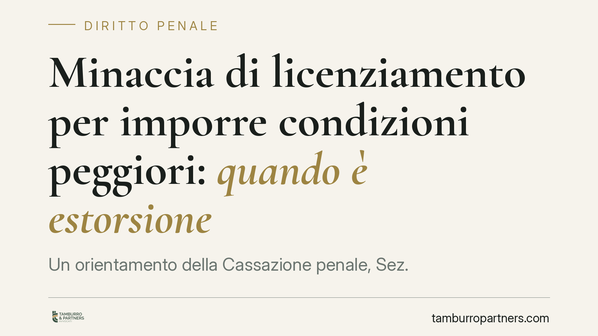

Minaccia di licenziamento per imporre condizioni peggiori: quando è estorsione
Un orientamento della Cassazione penale, Sez. II, affronta un nodo delicato: il datore che, con minacce anche velate di licenziamento, costringe il lavoratore ad accettare condizioni peggiori può rispondere di estorsione. La pronuncia impone di distinguere la legittima trattativa dalla coazione. Un passaggio che tocca sia la sfera penale sia il rapporto di lavoro.

Il caso
Un datore di lavoro prospetta al dipendente il licenziamento se non accetta una modifica peggiorativa delle condizioni contrattuali: riduzione di retribuzione, mutamento di mansioni, rinuncia a spettanze. La questione portata all'attenzione della Cassazione penale, Sez. II, è se questa pressione configuri reato.
La risposta, secondo l'orientamento emerso, è che una simile condotta può integrare il delitto di estorsione. Il consenso del lavoratore, in questi casi, non è libero: è il frutto di una coazione.
*(Nota redazionale: il riferimento al numero e all'anno esatto della sentenza è in corso di verifica puntuale. In questa sede si espone l'orientamento, senza attribuirgli un estremo non confermato.)*
Inquadramento normativo: l'estorsione e la minaccia di licenziamento
L'art. 629 del codice penale punisce chi, mediante violenza o minaccia, costringe taluno a fare o omettere qualcosa, procurando a sé o ad altri un ingiusto profitto con altrui danno. Sono tre gli elementi: la minaccia, la costrizione, l'ingiusto profitto a danno della vittima.
Il punto centrale è la natura della minaccia. Non serve una minaccia esplicita o violenta: anche una prospettazione velata di un male ingiusto può bastare. Quando il licenziamento viene brandito non come esito di una ragione reale, ma come strumento per piegare la volontà del lavoratore e ottenere un vantaggio economico non dovuto, la soglia penale può essere varcata.
Resta però fermo un principio processuale che non va confuso: nel processo penale il fatto-reato si accerta secondo lo standard dell'oltre ogni ragionevole dubbio. Il criterio civilistico del "più probabile che non" opera su un piano diverso — quello dell'accertamento del nesso causale e della liquidazione del danno in favore della parte civile — e non abbassa lo standard richiesto per affermare la responsabilità penale.
Il confine con la trattativa legittima e il jus variandi
Non ogni proposta peggiorativa è estorsione. Il datore conserva margini legittimi di riorganizzazione. L'art. 2103 c.c. disciplina il cosiddetto jus variandi, cioè il potere di modificare le mansioni del lavoratore, entro limiti precisi fissati dalla legge dopo la riforma del 2015.
Una proposta di modifica contrattuale, in sé, è attività negoziale lecita: il lavoratore resta libero di accettarla o rifiutarla. La distanza tra trattativa e reato sta nella struttura coattiva della richiesta: se il licenziamento è prospettato come ritorsione per il mancato assenso, e non come conseguenza di una reale esigenza aziendale, la proposta si trasforma in pressione illecita.
La valutazione è quindi di merito e fortemente legata al contesto: contenuto della minaccia, esistenza di un giustificato motivo reale, proporzione tra la condotta e il vantaggio perseguito.
Implicazioni pratiche
Per il lavoratore, la pronuncia conferma che l'accettazione estorta non chiude la partita. Se il consenso è stato coartato, può aprirsi sia la via penale (querela per estorsione) sia quella civile, con possibilità di costituirsi parte civile e chiedere il risarcimento del danno patrimoniale e non patrimoniale.
Per il datore di lavoro, cresce l'esposizione al rischio penale. Gestire una riorganizzazione o una revisione contrattuale con toni intimidatori può trasformare un'operazione lecita in un reato grave, punito con reclusione e multa. La forma con cui si conduce la trattativa pesa quanto il contenuto.
Per entrambi, conta la tracciabilità: comunicazioni scritte, verbali, testimoni. La prova della minaccia — o della sua assenza — si costruisce sui documenti e sulle circostanze concrete.
Cosa fare in concreto
Se sei un lavoratore sotto pressione:
- Conserva ogni traccia scritta (e-mail, messaggi, lettere) in cui emerge la prospettazione del licenziamento.
- Non firmare rinunce o accordi peggiorativi sotto la spinta dell'urgenza: annota data, luogo e contenuto delle richieste.
- Valuta tempestivamente, prima della firma, se la modifica proposta rientra nei limiti dell'art. 2103 c.c.
Se sei un datore di lavoro:
- Fonda ogni proposta di modifica su ragioni organizzative reali e documentabili, tenendole distinte da ipotesi di recesso.
- Evita di collegare esplicitamente o implicitamente il rifiuto della proposta al licenziamento.
- Prima di formalizzare accordi che riducono diritti del lavoratore, è opportuno un vaglio tecnico preventivo del testo e delle modalità con cui viene presentato.
Il confine tra riorganizzazione legittima e coazione penalmente rilevante si misura caso per caso, sulle circostanze concrete. Nessuna valutazione a priori sostituisce l'esame puntuale della singola vicenda.
Avvertenza
Contributo informativo a cura di Tamburro & Partners - Avv. Giuseppe Tamburro. Non costituisce parere legale.
Ogni condominio ha una storia a sé.
Se gestisci un'amministrazione e vuoi un confronto su una specifica questione condominiale, scrivi allo studio. Ti rispondiamo entro un giorno lavorativo.